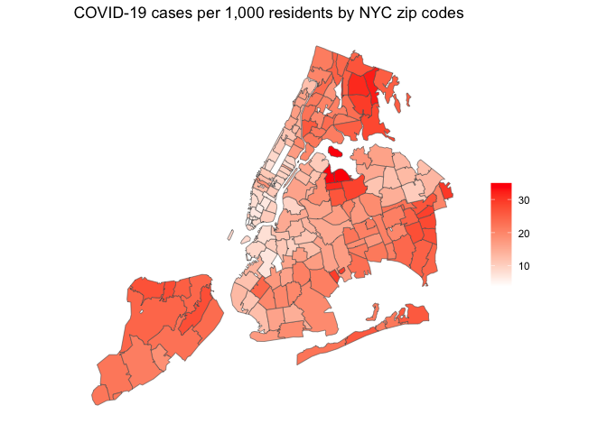
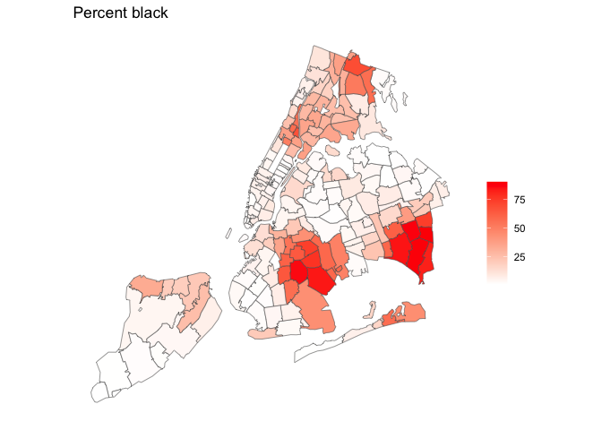
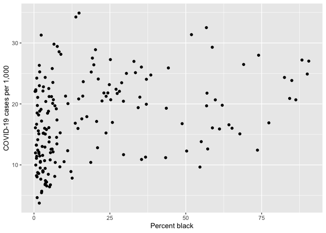

Linear regression is the workhorse of applied statistics. Its robustness and easy interpretation are but two of the many reasons that it is often the first and frequently the last stop on the way to characterizing empirical relationships among observed variables. We will start with covering the functions and tools to run simple linear regression models in R, closely following the BBR readings for this week. The objectives of this lab are as follows
To help us accomplish these learning objectives, we will examine the association between neighborhood characteristics and COVID-19 case rates in New York City zip codes. New York City is the epicenter of the COVID-19 outbreak in the United States. We will examine whether there are disparities in the types of neighborhoods that have been hit the hardest in the city.
We’ll be using a couple of new packages in this lab. First, you’ll need to install them. The code below checks if you’ve already installed these packages before. If you haven’t, it will install them.
if (!require("broom")) install.packages("broom")
if (!require("gridExtra")) install.packages("gridExtra")
if (!require("classInt")) install.packages("classInt")Load these packages and others we will need for this lab.
library(tidyverse)
library(gridExtra)
library(broom)
library(spdep)
library(sf)
There are three main reasons to run a linear regression:
We will be covering reasons 1 and 2 in the next couple of labs. We will cover reason 3 later in the quarter when we dive into statistical learning.
Why linear and not something else? It’s computationally easy. The estimated relationships are easy to describe. If certain assumptions are correct, it does a good job describing the relationship. We will cover nonlinear regression techniques later in the quarter.
Our research question in this lab is: What ecological characteristics are associated with zip code COVID-19 case rates in New York City?
Download the csv file zctanyctracts.csv and the shapefile (zipped) zctanyc.shp located on Canvas in the Lab and Assignments Week 5 folder. Read in the New York City zipcode csv file using the read_csv() function.
zctanyc <- read_csv("zctanyccovid.csv")COVID-19 case data were downloaded from the NYC Department of Health and Mental Hygiene (confirmed cases up through April 24, 2020). Socioeconomic and demographic data were downloaded from the 2014-2018 American Community Survey. A record layout of the data can be found here. We will not use all of these variables. We will do so next lab when we go through multiple linear regression.
Next bring in the New York City zipcode shape file using st_read()
zctanyc.sf <- st_read("zctanyc.shp")
Your first instinct as a Geographer when given new data is to map. MAP, Map, map (not MAUP, because Geographers don’t like that). We won’t be using any spatial analysis tools in this lab, but mapping is fun and gives you a sense of how the values of your variables are distributed across space.
First, we need to join the zipcode data zctanyc to the sf object zctanyc.sf using left_join()
zctanyc.sf <- left_join(zctanyc.sf, zctanyc, by = "GEOID")We can now map our main variable of interest, COVID-19 cases per 1,000 residents (covidrate). I use ggplot(), but you can load in tmap if like tm_shape() more.
ggplot(zctanyc.sf) +
geom_sf(aes(fill = covidrate)) +
scale_fill_gradient(low= "white", high = "red", name ="") +
labs(title = "COVID-19 cases per 1,000 residents by NYC zip codes") +
theme( axis.text = element_blank(),
axis.ticks = element_blank(),
panel.background = element_blank())
Let’s visually compare this map to our independent variable percent black (pblk).
ggplot(zctanyc.sf) +
geom_sf(aes(fill = pblk)) +
scale_fill_gradient(low= "white", high = "red", name ="") +
labs(title = "Percent black") +
theme( axis.text = element_blank(),
axis.ticks = element_blank(),
panel.background = element_blank())
We are interested in understanding the ecological characteristics associated with zipcode level COVID-19 cases per 1,000 residents (covidrate). Let’s examine its association with neighborhood percent black pblk. One of the first steps in conducting a data analysis is to plot the two variables to detect whether a relationship exists. Because COVID-19 rates and percent black are numeric variables, we can construct a scatter plot to examine the relationship. First, let’s scale pblk to be from 0 to 100 (as opposed to 0 to 1).
zctanyc <- mutate(zctanyc, pblk = pblk*100)Let’s use our reliable friend ggplot() again.
ggplot(zctanyc) +
geom_point(mapping = aes(x = pblk, y = covidrate)) +
xlab("Percent black") +
ylab("COVID-19 cases per 1,000")
The relationship is not super clear. The next step is to calculate the correlation between variables to get a numerical summary of the relationship. A picture and a numerical summary is a good combination.
Use the function cor.test() to calculate the Pearson correlation between COVID-19 case rates and median household income.
cor.test(zctanyc$covidrate, zctanyc$pblk) ##
## Pearson's product-moment correlation
##
## data: zctanyc$covidrate and zctanyc$pblk
## t = 4.7144, df = 175, p-value = 4.929e-06
## alternative hypothesis: true correlation is not equal to 0
## 95 percent confidence interval:
## 0.1980004 0.4604006
## sample estimates:
## cor
## 0.3356969The correlation ranges from -1 to 0 to 1, with -1 indicating perfect negative correlation and 1 indicating perfect positive correlation. The correlation is 0.34 with a p-value near 0.
In correlation analysis, the two variables whose association is being measured are treated interchangeably. In contrast, a regression analysis designates a response or dependent variable Y and an independent or explanatory variable X. The idea is that there is a direction in the relationship. X leads to, predicts or potentially causes Y.
We will designate COVID-19 rates as the dependent variable. We will examine its relationship with percent black, which is the independent variable. The most common regression model is a linear regression model. The most common approach to estimating a regression model is ordinary least squares (OLS). A linear regression model containing only one independent variable is known as a simple linear regression.
We use the function lm() to run a regression of COVID-19 case rates on percent black.
lm1 <- lm(covidrate ~ pblk, data = zctanyc)The first argument in lm() is the outcome. This is followed by the ~ operator and then the independent variable.
“Printing” the object gives a very short summary
lm1##
## Call:
## lm(formula = covidrate ~ pblk, data = zctanyc)
##
## Coefficients:
## (Intercept) pblk
## 15.58486 0.09636names() function reveals what’s contained in the lm1 object.
names(lm1)## [1] "coefficients" "residuals" "effects" "rank"
## [5] "fitted.values" "assign" "qr" "df.residual"
## [9] "xlevels" "call" "terms" "model"We find out we can extract neat things like the residuals
lm1$residualsAlso the fitted values
lm1$fitted.valuesQuestion 1: Your educated but non mathy mother-in-law asks you this Christmas to explain to her what residuals and fitted values are. What do you say? (Don’t be snarky or rude. She is family, you know)
The summary() function provides more detailed results
summary(lm1)##
## Call:
## lm(formula = covidrate ~ pblk, data = zctanyc)
##
## Residuals:
## Min 1Q Median 3Q Max
## -12.0235 -5.2758 -0.1771 4.4919 17.8935
##
## Coefficients:
## Estimate Std. Error t value Pr(>|t|)
## (Intercept) 15.58486 0.63189 24.664 < 2e-16 ***
## pblk 0.09636 0.02044 4.714 4.93e-06 ***
## ---
## Signif. codes: 0 '***' 0.001 '**' 0.01 '*' 0.05 '.' 0.1 ' ' 1
##
## Residual standard error: 6.464 on 175 degrees of freedom
## Multiple R-squared: 0.1127, Adjusted R-squared: 0.1076
## F-statistic: 22.23 on 1 and 175 DF, p-value: 4.929e-06If you don’t like results in scientific notation, type in
options(scipen=999)You can also create a tidy table of regression results using the tidy() function, which is a part of the broom package
tidy(lm1)## # A tibble: 2 x 5
## term estimate std.error statistic p.value
## <chr> <dbl> <dbl> <dbl> <dbl>
## 1 (Intercept) 15.6 0.632 24.7 7.60e-59
## 2 pblk 0.0964 0.0204 4.71 4.93e- 6Question 2: What is the interpretation of the intercept? What is the interpretation of the slope coefficient?
Question 3: What is the predicted value of COVID-19 rates at 10 percent black? 50 percent?
Question 4: Plot the independent and dependent variables. Also plot the least squares regression line. You want something that looks like BBR Figure 4-12 on page 179
The variables pblk is quantitative or numeric. Let’s examine a qualitative independent variable. First, let’s examine the variable poor, which categorizes the zipcode as a poor (poverty rate greater than 30%) and nonpoor (poverty rate less than or equal to 30%) neighborhood. It’s qualitative because the values are “Poor” and “Nonpoor”. In regression lingo, this is also known as a dummy variable where “Yes” is coded as 1 and “No” is coded as 0.
lm2 <- lm(covidrate ~ poor, data = zctanyc)
summary(lm2)##
## Call:
## lm(formula = covidrate ~ poor, data = zctanyc)
##
## Residuals:
## Min 1Q Median 3Q Max
## -13.3951 -5.2474 -0.4543 4.6464 17.7834
##
## Coefficients:
## Estimate Std. Error t value Pr(>|t|)
## (Intercept) 17.1249 0.5373 31.874 <0.0000000000000002 ***
## poorPoor 3.5874 1.6848 2.129 0.0346 *
## ---
## Signif. codes: 0 '***' 0.001 '**' 0.01 '*' 0.05 '.' 0.1 ' ' 1
##
## Residual standard error: 6.775 on 175 degrees of freedom
## Multiple R-squared: 0.02525, Adjusted R-squared: 0.01968
## F-statistic: 4.534 on 1 and 175 DF, p-value: 0.03463Question 5: What is the interpretation of the coefficient for the poorPoor variable?
Next, let’s examine a multi-categorical variable. Here, instead of two categories, we have multiple. Let’s examine the variable borough, which identifies the New York City Borough (Bronx, Brooklyn, Manhattan, Queens and Staten Island) the zipcode is located. It’s qualitative because the values are the names of the 5 boroughs.
lm3 <- lm(covidrate ~ borough, data = zctanyc)
summary(lm3)##
## Call:
## lm(formula = covidrate ~ borough, data = zctanyc)
##
## Residuals:
## Min 1Q Median 3Q Max
## -13.6669 -3.2796 -0.0014 3.2316 14.5503
##
## Coefficients:
## Estimate Std. Error t value Pr(>|t|)
## (Intercept) 23.754 1.019 23.316 < 0.0000000000000002 ***
## boroughBrooklyn -8.645 1.319 -6.555 0.000000000623 ***
## boroughManhattan -13.058 1.287 -10.148 < 0.0000000000000002 ***
## boroughQueens -3.396 1.219 -2.786 0.00593 **
## boroughStaten Island -2.897 1.664 -1.742 0.08338 .
## ---
## Signif. codes: 0 '***' 0.001 '**' 0.01 '*' 0.05 '.' 0.1 ' ' 1
##
## Residual standard error: 5.094 on 172 degrees of freedom
## Multiple R-squared: 0.4584, Adjusted R-squared: 0.4458
## F-statistic: 36.39 on 4 and 172 DF, p-value: < 0.00000000000000022Question 6: What is the interpretation of the coefficients boroughBrooklyn, boroughManhattan, boroughQueens and boroughStaten Island?
BBR on page 181 asks: how well does the line fit the original data. BBR introduces several measures. The most popular measure is the coefficient of determination, also known as R2. The value is given to us when you use the summary() function. Let’s go back to the model lm1
summary(lm1)##
## Call:
## lm(formula = covidrate ~ pblk, data = zctanyc)
##
## Residuals:
## Min 1Q Median 3Q Max
## -12.0235 -5.2758 -0.1771 4.4919 17.8935
##
## Coefficients:
## Estimate Std. Error t value Pr(>|t|)
## (Intercept) 15.58486 0.63189 24.664 < 0.0000000000000002 ***
## pblk 0.09636 0.02044 4.714 0.00000493 ***
## ---
## Signif. codes: 0 '***' 0.001 '**' 0.01 '*' 0.05 '.' 0.1 ' ' 1
##
## Residual standard error: 6.464 on 175 degrees of freedom
## Multiple R-squared: 0.1127, Adjusted R-squared: 0.1076
## F-statistic: 22.23 on 1 and 175 DF, p-value: 0.000004929“Multiple R-squared” gives the value R2 of 0.113.
Question 7: If you were trying to explain the R2 value 0.102 to your educated mother-in-law, what would you say?
You’re done. Good job.
Website created and maintained by Noli Brazil